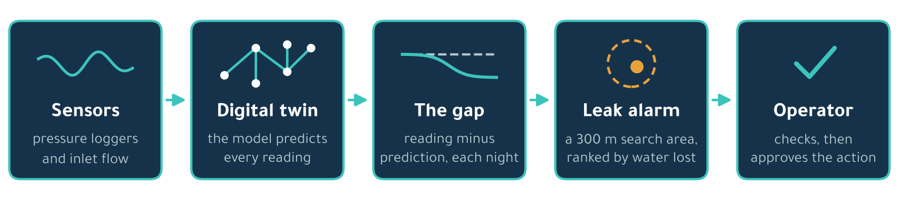
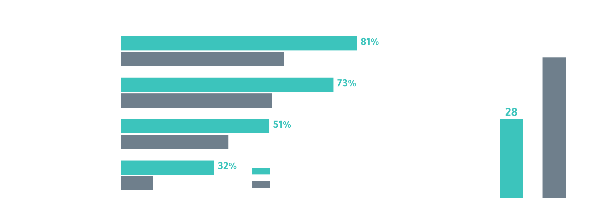
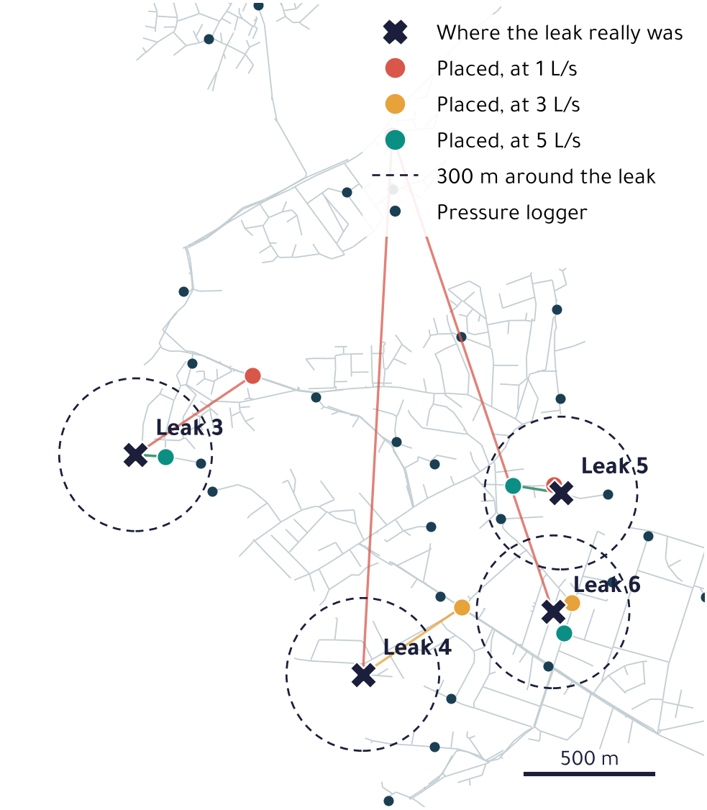

Water Guardian
A digital twin of a water network that detects leaks early, points crews to a 300 m search area and proves the cause with a night pressure test before anyone digs. Advisory: an operator approves every action.
Real leaks located: BristolJeddah zone, one year liveBenchmark year liveالعربيةHow Guardian works

Stages 1 and 4 are the tested engine. Stages 2, 3 and 5-8 are development tools: shown in the replay, not part of the tested results.
See it
Guardian against chance

Benchmark network, unseen simulated years. Grey bars: Guardian's own alarms, on the same dates, moved to random junctions. We show this for every number, because on a small network random alarms can look good.
On real data

Bristol: each cross is a real leak opened at a hydrant, each dot is where the tool placed it at one flow stage. The two long red lines are 1 L/s stages, where it is at chance.
Each of these ran once, with the code frozen beforehand. Bristol: 63 km network, 40 pressure loggers, 12-13 June 2024; hydrant positions fitted from a figure in the authors' thesis and not yet confirmed by them. UK district: 52 km, six pressure loggers, ten months.
A Saudi-compatible network
Real Jeddah streets; the pipes are inferred, not utility data. The count of leaks found there (86%) is not evidence of skill: random alarms find 85%.
What it cannot do yet
- Nothing has run on real Saudi data. No Saudi utility publishes a network with its readings and repairs; one district is our request.
- Small leaks are slow, and on small-leak years our scoring cannot separate Guardian from random alarms.
- On small networks the count of "leaks found" does not show skill, so we do not quote it as a result.
- Roof tanks are approximated, and on/off supply is tested on one simulated network: water every second day failed our test.
Results on 10 unseen test years
| Test year | Water saved | Leaks found | Wrong-place alarms |
|---|---|---|---|
| 211 | 13.1% | 3 of 26 | 0 |
| 212 | 84.9% | 21 of 25 | 33 |
| 213 | 71.4% | 23 of 31 | 19 |
| 214 | 76.0% | 16 of 20 | 29 |
| 215 | 74.5% | 29 of 37 | 37 |
| 216 | 77.2% | 24 of 38 | 47 |
| 217 | 71.3% | 20 of 33 | 23 |
| 218 | 90.6% | 26 of 29 | 34 |
| 219 | 82.8% | 25 of 32 | 24 |
| 220 | 74.6% | 28 of 36 | 33 |
| All 10 years | 71.6% | 215 of 307 | 27.9 a year |
Water saved: share of the maximum possible, official BattLeDIM scoring. Year 211: Guardian kept alarming near one large leak all year and missed the others; found after the test and reported, not tuned away.
Read the totals with their chance level (measured 15 Nov 2026: the same alarms, on the same dates, moved to random junctions and scored by the same rule). Water saved: 71.6% against 68.1% for random junctions (p = 0.06), so this figure alone is not clear of chance. Leaks found: 215 of 307 (70%), which random junctions also reach (69%). The skill is in where the alarms land: 27.9 wrong-place alarms a year against 49.8, and 73% of alarms within 300 m of a running leak against 52%.
How the numbers were made
The method was developed on development years only, then frozen (code fingerprints recorded), and only then tested once on fresh simulated years it had never seen, scored with the official BattLeDIM rules. The test years come from our copy of the organisers' simulator (it reproduces the official 2019 data to within 3 mm). Each wrong-place alarm costs one crew visit; the night pressure test is there to catch them before anyone digs.
Built for the IECE 2026 Engineering Hackathon by the ChemE Club, Jubail Industrial College. L-Town and BattLeDIM: Vrachimis et al. 2022, JWRPM, doi 10.1061/(ASCE)WR.1943-5452.0001601; data Zenodo 4017659 (CC BY 4.0). BKTown: Mazaev et al. 2023, Water Supply; data Zenodo 7255403 (CC BY 4.0). Bristol leak trials: Liu, Pecci and Stoianov, Imperial College London; data Zenodo 16737160 (CC BY 4.0). UK district: Wessex Water Leakage Scenario 3, Stream open data (CC BY 4.0).